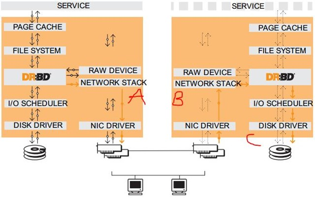

CentOS 7.6+NFS+Heartbeat+DRBD

文章目录
理论概述
本案例只是，为搭建MySQL集群做准备，并无MySQL
DRBD
DRBD（distributed replicated block device分布式复制块设备）是一个基于软件实现的、无共享的、服务器之间镜像块设备内容的存储复制解决方案。DRBD是镜像块设备，是按数据位镜像成一样的数据块
DRBD可以部署在如下类的底层设备上：
1、一个磁盘，或者是磁盘的某一个分区；
2、一个soft raid 设备；
3、一个LVM的逻辑卷；
4、一个EVMS（Enterprise Volume Management System，企业卷管理系统）的卷；
5、其他任何的块设备。
工作原理

DRBD需要运行在各个节点上，且是运行在节点主机的内核中，所以DRBD是内核模块，在Linux2.6.33版本起开始整合进内核。
DRBD工作的位置在文件系统的buffer Cache和磁盘调度器之间
如上图左节点为活跃节点实线箭头，有节点为备用节点虚线箭头。 左节点接收到数据法网内核的数据通路，DRBD在数据通路中注册钩子检查数据（类似ipvs）当检测到接收的数据是发往自己管理的存储位置，程序会复制另一份，一份存储到本机的DRBD存储设备，另一份就发给TCP/IP协议栈，通过网络传输到另一台节点上TCP/IP协议栈；另一台节点上运行的DRBD模块同样在数据通路上监测数据，当检测到传输过来的数据时，运行存储机制，存储到本机DRBD存储设备的对应位置。
如果左节点宕机，在高可用集群中右节点成为活跃节点，并且会接收到左节点宕机的信号，接受数据先保存到本地，左节点恢复上线之后，再把左节点宕机后右节点变动的 数据镜像到左节点。 每个设备（drbd 提供了不止一个设备）都有一个状态，可能是‘主’状态或‘从’态。在主节点上，应用程序应能运行和访问drbd设备（/dev/drbd）。每次写入会发往本地磁盘设备和从节点设备中。从节点只能简单地把数据写入它的磁盘设上。 读取数据通常在本地进行。如果主节点发生故障，心跳（heartbeat或corosync）将会把从节点转换到主状态，并启动其上的应用程序。（如果您将它和无日志FS 一起使用，则需要运行fsck）。如果发生故障的节点恢复工作，它就会成为新的从节点，而且必须使自己的内容与主节点的内容保持同步。
复制模式 镜像过程完成之后还需要返回成功或失败的回应信息。回应信息可以在传输过程中的不同位置返回，如上图A/B/C三处， 可以分为三种复制模式：
特点： 实时复制：一段修改之后马上复制过去 透明的传输：程序不需要检测到这个数据存储在多个主机上 同步或者异步：同步镜像：程序写操作完成后会通知所有已经连接的主机；异步同步：程序会在本地写完之前通知其它的主机。
A:一旦本地磁盘写入已经完成，数据包已在发送队列中，则写操作被认为是完成的 。在一个节点发生故障时，可能发生数据丢失，因为被写入到远程节点上的数据可能仍在发送队列。尽管，在故障转移节点上的数据是一致的，但没有及时更新。这通常是用于地理上分开的节点。
B:一旦本地磁盘写入已完成且复制数据包达到了对等节点则认为写操作在主节点上被认为是完成的。数据丢失可能发生在参加的两个节点同时故障的情况下，因为在飞行中的数据可能不会被提交到磁盘。
C:只有在本地和远程节点的磁盘已经确认了写操作完成，写才被认为完成。没有任何数据丢失，所以这是一个群集节点的流行模式，但I/O吞吐量依赖于网络带宽。 A 数据一旦写入磁盘并发送到网络中就认为完成了写入操作。 B 收到接收确认就认为完成了写入操作。 C 收到写入确认就认为完成了写入操作。 就目前而言应用最多和应用最广泛的为协议C。
架构
MySQL+heartbeat+drbd+lvs是一套成熟的集群解决方案在现在多数企业里面，通过heartbeat+DRBD完成MySQL的主节点写操作的高可用性，通过MySQL+lvs实现MySQL数据库的主从复制和MySQL读写的负载均衡。这个方案在读写方面进行了分离，融合了写操作的高可用和读操作的负载均衡。
NFS
NFS作为业界常用的共享存储方案，被众多公司采用。使用NFS作为共享存储，为前端WEB server提供服务，主要存储网页代码以及其他文件。
- 常用同步技术
- rsync+inotify实现文件同步
- 借助DRBD，实现文件同步 但是以上方案都没有实现高可用，只是实现了两者数据同步。但是业务要求NFS服务器必须是高可用，所以我们在第二种同步方案的基础上，在结合heartbeat来实现高可用。
架构部署
采用MySQL读写分离的方案；而读写之间的数据同步采用MySQL的单项或者双向复制技术实现。 MySQL写操作采用基于heartbeat+DRBD+MySQL搭建高可用集群；读操作普遍采用基于LVS+keepalived搭建高可用扩展集群方案
本案例中暂时没部署MySQL，实现思路：ct74和ct75两台机器，分别安装nfs，heartbeat，ct74，DRBD。
- nfs可以另找一台服务器搭建专门用为共享存储。
- nfs的控制权交给了heartbeat。
架构拓扑

环境 全部都是CentOS7.6 系统
| 主机名 | IP | 担任角色 |
|---|---|---|
| ct74 | 192.168.137.74 | drbd主，nfs server，heartbeat主 |
| ct75 | 192.168.137.75 | drbd被，heartbeat被 |
| VIP | 192.168.137.82 | |
| nfs客户端 | 192.168.137.61 | 挂载VIP共享的目录测试 |
部署DRBD
- 所有主机配置hosts并且改为对应的主机名
- 所有主机保持网络状况的良好通信
- 所有主机安装最新的epel源
- DRBD这两台各自分别添加了1GB硬盘供DRBD使用
- 同步时间
1 2 3 4 5 6 7 8 9 10 11 12 13 14 15 16 17 18 19 20 21 22 23 24 |
[root@ct74 ~]# vim /etc/hosts 192.168.137.74 ct74 192.168.137.75 ct75 [root@ct74 ~]# ssh-keygen -q -t rsa -N '' -f ~/.ssh/id_rsa [root@ct74 ~]# ssh-copy-id root@ct75 #ssh免密认证 [root@ct74 ~]# uname -r 3.10.0-957.21.3.el7.x86_64 #要是这个957版本以后的,若不是,请升级(yum update kernel* -y)然后reboot [root@ct75 ~]# yum install https://www.elrepo.org/elrepo-release-7.0-3.el7.elrepo.noarch.rpm -y [root@ct75 ~]# yum -y install drbd84-utils kmod-drbd84 #安装DRBD [root@ct75 ~]# modprobe drbd #不出意外这样就OK了 echo "modprobe drbd">>/etc/rc.local # 加入开机自启动 chmod +x /etc/rc.d/rc.local [root@ct75 ~]# lsmod |grep -i drbd drbd 397041 0 libcrc32c 12644 4 xfs,drbd,nf_nat,nf_conntrack |
- 分区
1 2 3 4 5 6 7 8 9 10 11 12 13 14 15 16 17 18 19 20 21 22 23 24 25 26 27 28 |
[root@ct75 ~]# fdisk /dev/sdb
欢迎使用 fdisk (util-linux 2.23.2)。
更改将停留在内存中，直到您决定将更改写入磁盘。
使用写入命令前请三思。
Device does not contain a recognized partition table
使用磁盘标识符 0x7ce5781e 创建新的 DOS 磁盘标签。
命令(输入 m 获取帮助)：n
Partition type:
p primary (0 primary, 0 extended, 4 free)
e extended
Select (default p): p
分区号 (1-4，默认 1)：
起始 扇区 (2048-2097151，默认为 2048)：
将使用默认值 2048
Last 扇区, +扇区 or +size{K,M,G} (2048-2097151，默认为 2097151)：
将使用默认值 2097151
分区 1 已设置为 Linux 类型，大小设为 1023 MiB
命令(输入 m 获取帮助)：w
The partition table has been altered!
Calling ioctl() to re-read partition table.
正在同步磁盘。
[root@ct75 ~]# partprobe /dev/sdb
#以上关于DRBD和分区的操作在2台机器上重复操作，master和backup分区大小一致。 |
- 修改配置文件
1 2 3 4 5 6 7 8 9 10 11 12 13 14 15 16 17 18 19 20 21 22 23 24 25 26 27 28 29 30 31 32 33 34 35 36 37 38 39 40 41 42 43 44 45 46 47 48 49 50 51 52 53 54 55 56 57 58 |
[root@ct74 ~]# vim /etc/drbd.conf
#include "drbd.d/global_common.conf";
#注释掉这行，避免和我们自己写的配置产生冲突。
include "drbd.d/*.res";
include "drbd.d/*.cfg";
[root@ct74 ~]# vim /etc/drbd.d/drbd_basic.cfg
global {
usage-count yes;
#是否参与DRBD使用者统计，默认为yes，yes or no都无所谓
}
common {
syncer { rate 100M; }
}
#设置主备节点同步的网络速率最大值，默认单位是字节，我们可以设定为兆
resource r0 {
#r0为资源名，我们在初始化磁盘的时候就可以使用资源名来初始化。
protocol C;
#使用 C 协议。
handlers {
pri-on-incon-degr "echo o > /proc/sysrq-trigger ; halt -f ";
pri-lost-after-sb "echo o > /proc/sysrq-trigger ; halt ";
local-io-error "echo o > /proc/sysrq-trigger ; halt -f";
fence-peer "/usr/lib4/heartbeat/drbd-peer-outdater -t 5";
pri-lost "echo pri-lst. Have a look at the log file.mail -s 'Drbd Alert' root";
split-brain "/usr/lib/drbd/notify-split-brain.sh root";
out-of-sync "/usr/lib/drbd/notify-out-of-sync.sh root";
}
net {
cram-hmac-alg "sha1";
shared-secret "MySQL-HA";
#drbd同步时使用的验证方式和密码信息
}
disk {
on-io-error detach;
fencing resource-only;
# 使用DOPD（drbd outdate-peer deamon）功能保证数据不同步的时候不进行切换。
}
startup {
wfc-timeout 120;
degr-wfc-timeout 120;
}
device /dev/drbd0;
#这里/dev/drbd0是用户挂载时的设备名字，由DRBD进程创建
on ct74 {
#每个主机名的说明以on开头，后面是hostname（必须在/etc/hosts可解析）
disk /dev/sdb1;
#使用这个磁盘作为drbd的磁盘/dev/drbd0。
address 192.168.137.74:7788;
#设置DRBD的监听端口，用于与另一台主机通信
meta-disk internal;
#drbd的元数据存放方式
}
on ct75 {
disk /dev/sdb1;
address 192.168.137.75:7788;
meta-disk internal;
}
} |
1 2 3 4 5 6 7 8 9 10 11 12 13 14 15 16 17 18 19 20 21 22 23 24 25 26 27 28 29 |
[root@dbmaster ~]# dd if=/dev/zero of=/dev/sdb1 bs=1M count=1 记录了1+0 的读入 记录了1+0 的写出 1048576字节(1.0 MB)已复制，0.00339429 秒，309 MB/秒 [root@ct74 ~]# drbdadm create-md r0 --== Thank you for participating in the global usage survey ==-- The server's response is: you are the 14097th user to install this version WARN: You are using the 'drbd-peer-outdater' as fence-peer program. If you use that mechanism the dopd heartbeat plugin program needs to be able to call drbdsetup and drbdmeta with root privileges. You need to fix this with these commands: chgrp haclient /lib/drbd/drbdsetup-84 chmod o-x /lib/drbd/drbdsetup-84 chmod u+s /lib/drbd/drbdsetup-84 chgrp haclient /usr/sbin/drbdmeta chmod o-x /usr/sbin/drbdmeta chmod u+s /usr/sbin/drbdmeta initializing activity log initializing bitmap (32 KB) to all zero Writing meta data... New drbd meta data block successfully created. success #使用dd命令清空，然后再执行 |
- 进一步配置
1 2 3 4 5 6 7 8 9 10 11 12 13 14 15 16 17 18 19 20 21 22 23 24 25 26 27 28 29 |
[root@ct74 ~]# drbdadm up all [root@ct74 ~]# systemctl start drbd.service [root@ct75 ~]# systemctl enable drbd.service #启动服务 #如报错，试试如下，不报错跳过这步 groupadd haclient chgrp haclient /lib/drbd/drbdsetup-84 chmod o-x /lib/drbd/drbdsetup-84 chmod u+s /lib/drbd/drbdsetup-84 chgrp haclient /usr/sbin/drbdmeta chmod o-x /usr/sbin/drbdmeta chmod u+s /usr/sbin/drbdmeta #以上这几个操作，找了很多资料都没有提到要做，还特意提醒不用做，可能环境不同吧，不做一直报错 [root@ct74 ~]# drbdadm primary --force r0 #仅在主上操作 [root@ct74 ~]# drbdadm role r0 Primary/Secondary #查看状态 [root@ct74 ~]# watch -n1 -x cat /proc/drbd [root@ct75 ~]# drbdadm role r0 Secondary/Primary #backup机器查看状态 [root@ct75 ~]# drbdadm dstate r0 UpToDate/UpToDate #查看数据同步状态，如上为一致，还有Inconsistent状态为数据不一致正在同步 |
- 挂载DRBD磁盘
1 2 3 4 5 6 7 8 9 10 11 12 13 14 15 16 17 18 19 20 21 22 23 24 25 26 27 28 29 30 31 32 33 34 35 36 37 38 39 40 41 42 43 44 45 46 47 48 49 50 51 52 53 54 55 56 57 58 59 60 61 62 63 |
现在ct74上操作
[root@ct74 ~]# mkfs.ext4 /dev/drbd0
mke2fs 1.42.9 (28-Dec-2013)
文件系统标签=
OS type: Linux
块大小=4096 (log=2)
分块大小=4096 (log=2)
Stride=0 blocks, Stripe width=0 blocks
65536 inodes, 261871 blocks
13093 blocks (5.00%) reserved for the super user
第一个数据块=0
Maximum filesystem blocks=268435456
8 block groups
32768 blocks per group, 32768 fragments per group
8192 inodes per group
Superblock backups stored on blocks:
32768, 98304, 163840, 229376
Allocating group tables: 完成
正在写入inode表: 完成
Creating journal (4096 blocks): 完成
Writing superblocks and filesystem accounting information: 完成
[root@ct74 ~]# mkdir /nfs
[root@ct74 ~]# mount /dev/drbd0 /nfs
[root@ct74 ~]# df -Th
Filesystem Type Size Used Avail Use% Mounted on
/dev/sda3 ext4 46G 1.7G 42G 4% /
devtmpfs devtmpfs 749M 0 749M 0% /dev
tmpfs tmpfs 759M 0 759M 0% /dev/shm
tmpfs tmpfs 759M 8.8M 750M 2% /run
tmpfs tmpfs 759M 0 759M 0% /sys/fs/cgroup
/dev/sda1 ext4 477M 124M 325M 28% /boot
tmpfs tmpfs 152M 0 152M 0% /run/user/0
/dev/drbd0 ext4 991M 2.6M 922M 1% /nfs
现在是ct75上操作，主要是检测备端是否能够正常挂载和使用：
[root@ct74 ~]# umount /nfs
#主上将设备卸载
[root@ct74 ~]# drbdadm secondary all
#切换为被状态
[root@ct75 ~]# drbdadm primary r0
#被设为主状态
[root@ct75 ~]# mkdir /nfs
[root@ct75 ~]# mount /dev/drbd0 /nfs
[root@ct75 ~]# df -Th
Filesystem Type Size Used Avail Use% Mounted on
/dev/sda3 ext4 46G 1.7G 42G 4% /
devtmpfs devtmpfs 749M 0 749M 0% /dev
tmpfs tmpfs 759M 0 759M 0% /dev/shm
tmpfs tmpfs 759M 8.8M 750M 2% /run
tmpfs tmpfs 759M 0 759M 0% /sys/fs/cgroup
/dev/sda1 ext4 477M 124M 325M 28% /boot
tmpfs tmpfs 152M 0 152M 0% /run/user/0
/dev/drbd0 ext4 991M 2.6M 922M 1% /nfs
再按相同的方法将状态切换回来 |
好的，这下简单测试了下，先告一段落
部署heartbeat
- 安装cluster-glue
1 2 3 4 5 6 7 8 9 10 11 12 13 14 15 16 17 18 19 20 |
yum install gcc gcc-c++ flex autoconf automake libtool glib2-devel libxml2-devel bzip2 bzip2-devel e2fsprogs-devel libxslt-devel libtool-ltdl-devel asciidoc -y #两机同样操作安装依赖 groupadd haclient useradd -g haclient hacluster -s /sbin/nologin 安装包下载 下载软件包：Reusable-Components-glue、resource-agents、heartbeat cd /opt wget http://hg.linux-ha.org/heartbeat-STABLE_3_0/archive/958e11be8686.tar.bz2 wget http://hg.linux-ha.org/glue/archive/0a7add1d9996.tar.bz2 wget https://github.com/ClusterLabs/resource-agents/archive/v3.9.6.tar.gz tar xf 0a7add1d9996.tar.bz2 cd Reusable-Cluster-Components-glue--0a7add1d9996/ ./autogen.sh ./configure --prefix=/usr/local/heartbeat --with-daemon-user=hacluster --with-daemon-group=haclient --enable-fatal-warnings=no LIBS='/lib64/libuuid.so.1' make && make install echo $? cd .. |
- 安装resource-agents
1 2 3 4 5 6 7 |
tar xf v3.9.6.tar.gz cd resource-agents-3.9.6/ ./autogen.sh ./configure --prefix=/usr/local/heartbeat --with-daemon-user=hacluster --with-daemon-group=haclient --enable-fatal-warnings=no LIBS='/lib64/libuuid.so.1' make && make install echo $? cd .. |
- 安装heartbeat
1 2 3 4 5 6 7 8 9 10 11 12 13 14 15 16 |
tar xf 958e11be8686.tar.bz2
cd Heartbeat-3-0-958e11be8686/
./bootstrap
export CFLAGS="$CFLAGS -I/usr/local/heartbeat/include -L/usr/local/heartbeat/lib"
./configure --prefix=/usr/local/heartbeat --with-daemon-user=hacluster --with-daemon-group=haclient --enable-fatal-warnings=no LIBS='/lib64/libuuid.so.1'
make && make install
echo $?
mkdir -pv /usr/local/heartbeat/usr/lib/ocf/lib/heartbeat/
cp -R /usr/lib/ocf/lib/heartbeat/ocf-* /usr/local/heartbeat/usr/lib/ocf/lib/heartbeat/
cp -R /opt/Heartbeat-3-0-958e11be8686/doc/{ha.cf,haresources,authkeys} /usr/local/heartbeat/etc/ha.d/
#拷贝配置文件
chmod 600 /usr/local/heartbeat/etc/ha.d/authkeys
#该权限必须为600
#以上安装两台机器一样 |
- 配置文件
1 2 3 4 5 6 7 8 9 10 11 12 13 14 15 16 17 18 19 20 21 22 23 24 25 26 27 28 29 30 31 32 33 34 35 36 37 38 39 40 41 42 43 44 45 46 47 48 49 50 51 52 53 54 55 56 57 58 59 60 61 62 63 64 65 |
[root@ct74 ~]# vim /usr/local/heartbeat/etc/ha.d/haresources #末尾添加如下 ct74 IPaddr::192.168.137.82/24/eth0 drbddisk::r0 Filesystem::/dev/drbd0::/nfs::ext4 killnfsd #ct74 IPaddr::192.168.137.82/24/eth0主机名 后跟虚拟IP地址、接口 #drbddisk::r0管理drbd资源的名称 #Filesystem::/dev/drbd0::/nfs::ext4 renfsd文件系统::挂载的目录及格式::后跟renfsd资源脚本 cp -R /etc/ha.d/resource.d/drbddisk /usr/local/heartbeat/etc/ha.d/resource.d/ #两台一样 echo "pkill -9 nfs; systemctl restart nfs; exit 0" > /usr/local/heartbeat/etc/ha.d/resource.d/killnfsd #编辑nfs脚本文件killnfsd ，killnfsd 脚本文件的作用， #drbd主备切换时，若nfs没有启动，则此脚本会把nfs启动 #drbd主备切换时，若nfs已启动，则此脚本会重启nfs服务，因为NFS服务切换后，必须重新mount一下nfs共享出来的目录，否则会出现stale NFS file handle的错误 chmod +x /usr/local/heartbeat/etc/ha.d/resource.d/drbddisk chmod +x /usr/local/heartbeat/etc/ha.d/resource.d/killnfsd [root@ct74 resource.d]# pwd /usr/local/heartbeat/etc/ha.d/resource.d [root@ct74 resource.d]# ll drbddisk Filesystem killnfsd IPaddr -rwxr-xr-x 1 root root 3162 5月 14 15:43 drbddisk -rwxr-xr-x 1 root root 1923 5月 14 10:15 Filesystem -rwxr-xr-x 1 root root 2297 5月 14 10:15 IPaddr -rwxr-xr-x 1 root root 57 5月 14 15:41 killnfsd #必须要有这四个脚本，有的是自带，有的是复制，有的自己写，上面已经说明而且必须要有执行权限。 [root@ct74 ~]# vim /usr/local/heartbeat/etc/ha.d/ha.cf #修改主配置文件（去掉注释或修改值） debugfile /var/log/ha-debug logfile /var/log/ha-log #指定heartbeat日志文件的位置 logfacility local0 #利用系统日志打印日志 keepalive 1 # 心跳发送时间间隔 deadtime 5 # 备用节点5s内没有检测到master机的心跳，确认对方故障 warntime 2 # 警告2次 initdead 10 # 守护进程启动30s后，启动服务资源。 udpport 694 #设定集群节点间的通信协议及端口为udp694监听端口（该端口可以修改） ucast eth0 192.168.137.75 # 另一台主机节点eth0的地址，注意是另一台。 auto_failback off #当primary节点切换到secondary节点之后，primary节点恢复正常，不进行切回操作，因为切换一次mysql master成本很高。 node ct74 node ct75 # 定义两个节点的主机名，一行写一个。 ping 192.168.137.1 #两个IP的网关 respawn hacluster /usr/local/heartbeat/libexec/heartbeat/ipfail #使用这个脚本去侦听对方是否还活着（使用的是ICMP报文检测） [root@ct74 ~]# vim /usr/local/heartbeat/etc/ha.d/authkeys #认证文件 auth 1 #表示使用id为2的验证 下边需要定义一个2的验证算法 1 sha1 HA_DB #口令（HISHA1）随便给 主从配置相同即可 |
dbdackup也是同样的安装方法，配置文件直接scp过去就可以了，然后修改
1 2 3 4 5 6 7 8 9 10 |
[root@ct74 ~]# scp -r /usr/local/heartbeat/etc/ha.d/{authkeys,haresources,ha.cf} root@ct75:/usr/local/heartbeat/etc/ha.d/
[root@ct75 ha.d]# vim /usr/local/heartbeat/etc/ha.d/ha.cf
ucast eth0 192.168.137.74
#把backup节点上ha.cf配置文件中ucast中IP改为对方
[root@ct74 ~]# ln -svf /usr/local/heartbeat/lib64/heartbeat/plugins/RAExec/* /usr/local/heartbeat/lib/heartbeat/plugins/RAExec/
[root@ct74 ~]# ln -svf /usr/local/heartbeat/lib64/heartbeat/plugins/* /usr/local/heartbeat/lib/heartbeat/plugins/
#2机器将这些库文件链接过去，要不启动报错
May 13 13:09:27 ct74 heartbeat: [86183]: ERROR: Illegal directive [ucast] in /usr/local/heartbeat/etc/ha.d/ha.cf |
部署NFS及配合heartbeat
1 2 3 4 5 6 7 8 9 10 11 12 13 14 15 16 17 18 19 20 21 22 23 24 25 26 27 28 29 |
[root@ct75 ~]# yum -y install nfs-utils nfs-utils-lib nfs4-acl-tools rpcbind
#ct74和ct75安装
[root@ct74 ~]# vim /etc/exports
/nfs 192.168.137.0/24(rw,sync,no_root_squash)
#设置nfs共享目录，权限，网段
[root@ct74 ~]# systemctl restart rpcbind
#启动顺序一定是rpcbind->nfs，否则有可能出现错误
#在这里nfs不需要启动，它由heartbeat控制
[root@ct74 ~]# systemctl start heartbeat
[root@ct74 ~]# systemctl enable heartbeat
#最多等一两分钟VIP肯定出来，否则查看日志
[root@ct74 ~]# ip a | grep inet
#主上查看
inet 127.0.0.1/8 scope host lo
inet6 ::1/128 scope host
inet 192.168.137.74/24 brd 192.168.137.255 scope global noprefixroute eth0
inet 192.168.137.82/24 brd 192.168.137.255 scope global secondary eth0:0
inet6 fe80::20c:29ff:fec3:1a39/64 scope link
#到了这，VIP肯定要出来，可以稍等会，观察下日志。如果出错，上面可能哪一步没有到位
[root@ct74 ~]# mount | grep drbd
/dev/drbd0 on /nfs type ext4 (rw,relatime,data=ordered)
#这个也已经根据配置自动挂载
[root@ct75 ~]# showmount -e 192.168.137.82
Export list for 192.168.137.82
/nfs 192.168.137.82/24
#查看VIP共享的目录 |
- 配置nfs自动挂载
1 2 3 4 5 6 7 8 9 |
[root@localhost ~]# mkdir /nfs [root@localhost ~]# mount 192.168.137.82:/nfs/ /nfs/ #客户端测试 [root@localhost ~]# echo "192.168.137.82:/nfs /nfs nfs defaults,soft,intr 0 0" >> /etc/fstab [root@localhost ~]# tail -1 /etc/fstab 192.168.137.82:/nfs /nfs nfs defaults,soft,intr 0 0 #Nfs是类型 #soft参数是为了向用户输出错误信息 #intr参数为了解决当网络出现故障时，我们可以通过按下ctrl+c组合键来终止操作 |
- 验证：接下来我们在主上把nfs服务关掉，模拟故障，看VIP是否切换主机
1 2 3 4 5 6 7 8 9 10 11 12 13 14 15 16 |
[root@ct74 ~]# systemctl stop nfs
[root@ct74 ~]# systemctl status nfs
● nfs-server.service - NFS server and services
Loaded: loaded (/usr/lib/systemd/system/nfs-server.service; disabled; vendor preset: disabled)
Drop-In: /run/systemd/generator/nfs-server.service.d
└─order-with-mounts.conf
Active: inactive (dead) since 二 2019-05-14 18:21:09 CST; 6s ago
Process: 61802 ExecStopPost=/usr/sbin/exportfs -f (code=exited, status=0/SUCCESS)
Process: 61799 ExecStopPost=/usr/sbin/exportfs -au (code=exited, status=0/SUCCESS)
Process: 61797 ExecStop=/usr/sbin/rpc.nfsd 0 (code=exited, status=0/SUCCESS)
Main PID: 60625 (code=exited, status=0/SUCCESS)
5月 14 16:35:58 ct74 systemd[1]: Starting NFS server and services...
5月 14 16:35:58 ct74 systemd[1]: Started NFS server and services.
5月 14 18:21:09 ct74 systemd[1]: Stopping NFS server and services...
5月 14 18:21:09 ct74 systemd[1]: Stopped NFS server and services. |
我在主被两台机器上查看debug日志，没有任何变动
1 2 3 |
[root@ct75 ~]# cd /nfs #我在挂载了VIP的机器上查看共享目录能否使用，卡死终端 |
总结下原因：heartbeat没有监控到nfs的服务状态，它自身想当然的认为，只有heartbeat服务出故障，才切VIP。
解决：我们将nfs，和heartbeat服务做一个捆绑，类似于事物性质。即nfs出问题，heartbeat也要宕掉。这里通过脚本实现。
1 2 3 4 5 6 7 8 9 10 11 12 13 14 15 16 17 18 19 20 21 22 23 24 25 26 27 |
[root@ct74 ~]# vim /opt/monitornfs.sh
while true
do
drbdstatus=`cat /proc/drbd 2> /dev/null | grep ro | tail -n1 | awk -F':' '{print $4}' | awk -F'/' '{print $1}'`
nfsstatus=`systemctl status nfs&>/dev/null ; echo $?`
if [ -z $drbdstatus ];then
sleep 10
continue
elif [ $drbdstatus == 'Primary' ];then
if [ $nfsstatus -ne 0 ];then
systemctl start nfs &> /dev/null
newnfsstatus=`systemctl status nfs&>/dev/null ; echo $?`
if [ $newnfsstatus -ne 0 ];then
systemctl stop heartbeat
#尝试开启之后若还是不行,则关掉heartbeat
fi
fi
fi
sleep 5
done
[root@ct74 ~]# chmod +x /opt/monitornfs.sh
[root@ct74 ~]# nohup /opt/monitornfs.sh &
echo "nohup /opt/monitornfs.sh &" >>/etc/rc.local
#以上关于脚本操作，在ct75上重复 |
- 测试
1 2 3 4 5 6 |
[root@ct74 ~]# systemctl stop nfs #主节点关掉nfs服务 #但是后台的脚本又给他开启了 [root@ct74 ~]# systemctl stop heartbeat #VIP切换到备机了 |
但是nfs客户端的使用并不影响，切换的时候会有轻微的延迟。